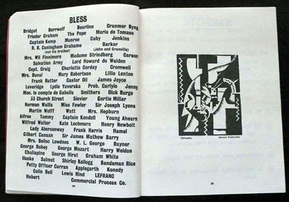
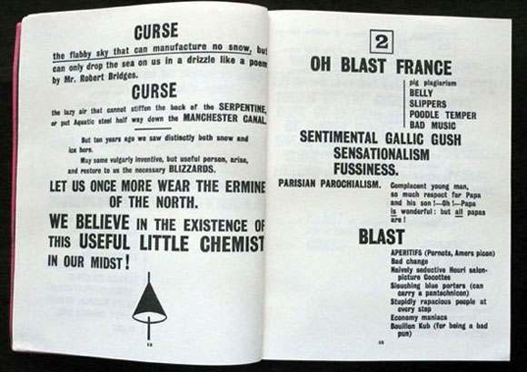
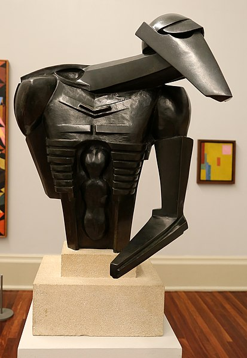
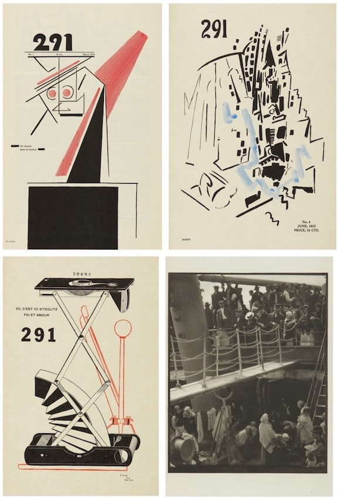
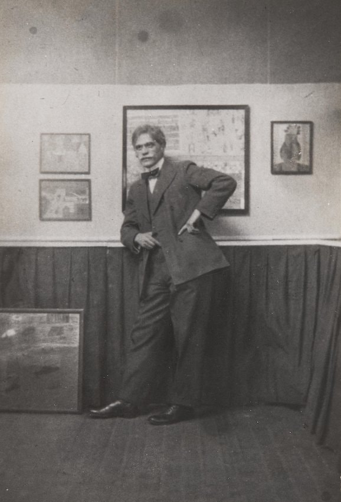

Agenda
- Are you interested in having an informal writing-clinic ahead of assignment 2?
- Vorticism and British abstraction
- Modernism's exchange between the United States and Europe
note to self: if you haven't started recording, start recording!
Vorticism
"The image is not an idea. It is a radiant node or cluster; it is what I can, and must perforce, call a VORTEX, from which, and through which, and into which ideas are constantly rushing. In decency one can only call it a VORTEX. And from this necessity came the name 'vorticism'"
Ezra PoundOk... but what is Vorticism exactly?
Kind of like a British version of Futurism:
- Inspired by the aesthetics of new machines.
- An important early contribution to abstraction (especially the geometric/hard-edged style).
- Led by Wyndham Lewis, who (like F.T. Marinetti) was the movement's zealous spokesman, who combined his passions for advanced art, experimental literature, and media.
- Also keen on war, aggression, and authoritarianism if not outright fascism in Lewis' case. 😕
-

Blast no. 1 - edited by Wyndham Lewis
-

- 
- 
Futurism is essentially an acceleration of successive images, seen simultaneously, across a very shallow plain, as also was the 'cubo-futurism' of Marcel Duchamp's Nude Descending a Staircase. What Vorticism did was to extend this acceleration into depth, creating an intense, inrushing perspective - a vortex.
Paul Overy, Vorticism, 107And that looks like this:
-

At first glance Composition presents a compressed series of mechanical forms and abstract references to the modern city. However, it is possible to recognise traces of human figures. Dynamic thrusting shapes rise from the lower left but are contained within a claustrophobic, abstract environment. These forms can be seen as a dancing couple. The woman, on the right, bends backwards. The white parallelogram halfway up the right edge is perhaps her hair. The pleated curving architectural form at the bottom centre could be her skirt.
Tate MuseumWyndham Lewis - Composition - 1913 (hover)
-

Lewis had a particular interest in the modern city as a place of tensions. In this work two slanting forms resemble architectural structures. Their steep diagonal focus dominates the composition. However, like other works by Lewis from this period, the drawing communicates a strong feeling of instability, arrested motion and agitation. These abstracted urban forms are also suggestive of figures, perhaps caught in a lull in between actions.
Tate MuseumWyndham Lewis - Vorticist Composition - 1915
-

The subject of this painting is the hold of a ship, in which dock workers are handling heavy freight. However, Bomberg has divided the canvas into a grid of squares that are themselves divided. The effect of this is to shatter form, transforming the scene into a kinetic pattern of shape and dazzling colour. Though the image has become hard to decipher, the fragmented composition expresses the energy of men at work in an industrial environment.
Tate MuseumDavid Bomberg - In the Hold - 1913-14 (hover)
-

Bathing figures were a traditional way of depicting the nude, but here Bomberg brings the subject into the modern era by basing the scene on steam baths used by the local Jewish population near Bomberg’s home in east London. Bomberg was closely associated with a group of artists known as the vorticists. Their aim was to create art that expressed the modern world through imagery derived from machines and the urban environment. Here Bomberg reduces the human figure to a series of geometric shapes, a process he described as 'searching for an intenser expression … where I use Naturalistic Form I have stripped it of all irrelevant matter.'
Tate MuseumDavid Bomberg - The Mud Bath - 1914 (hover)
-

Very little of Wadsworth’s early work survives. He made this gouache in woodland near Lewes in Sussex, when he was twenty-four. He was exploring ideas about the depiction of form and space derived from Cézanne and Cubism. Wadsworth rarely produced pastoral landscapes like this; his later work was to be dominated by industrial, urban and maritime imagery.
Tate MuseumEdward Wadsworth - Landscape - 1913 (hover)
-

Sharp diagonal lines converge towards a focal point. This painting recalls the poet Ezra Pound’s description of the vortex as ‘absorbing all that is around it in a violent whirling’. The vorticist group’s aggressive rhetoric, angular style and focus on the energy of modern life were similar to Italian futurism. However, they did not share the futurists’ emphasis on speed, or their romanticisation of technology. Wadsworth and the other vorticists had a more matter-of-fact attitude to the machine age. Their images betray little sense of celebratory excitement.
Tate MuseumEdward Wadsworth - Abstract Composition - 1915 (hover)
And in sculpture...
-

Jacob Epstein - The Rockdrill - 1915
-

Jacob Epstein - The Rockdrill - 1915
Whoa, put that thing away!
This brutal energy was characteristic of Vorticism. At their best the Vorticists achieved a strong visualization of the headlong flight of Europe into mechanical barbarity, an awareness of the brutalization of man by his irresponsible control of his environment that is lacking in the idealized art of Cubism and the romanticized art of Futurism. This, and the acceleration of forms into depth, was the significant contribution of Vorticism to the art of the twentieth century.
Paul Overy, Vorticism, 109When the organic world begins to resemble the machine, where does the utopian turn into dystopian?
-

Henri Gaudier-Brzeska - Fish - 1914
-
Christopher Richard Wynne Nevinson - La Mitrailleuse - 1915
What do you get when European artists go to the US and American artists go to Europe during a period of rapid modernization?
Christopher Richard Wynne Nevinson - The Soul of the Soulless City (New York - an Abstraction) - 1920
United States might have possessed the prized icons of modernity, but its artists lacked the privileged styles of modernism. As a result they felt at once benighted and belated in relation to European modernists, a condition that complicated the transatlantic travel of artists in the teens and twenties… Discontent with the messy realism of their elder compatriots, some American artists voyaged to Europe to seek out modernist art, while others had already seen such work in New York at the controversial Armory Show.... Indeed, the North American encounter with modernism occurred mostly in the States, where Duchamp, Picabia and others had fled during World War I. At the time New York was the interim capital of the avant-garde...
Art Since 1900Many of the following artists were supported by Alfred Stieglitz, a photographer of some renown who ran the extremely influential 291 Gallery in New York, which supported leading American artists while showing the European Avant-Garde to the New York art world.
-

Publication for 291 Gallery, selected pages including plus Stieglitz's photo The Steerage, 1915-196
-

Alfred Stieglitz
Marsden Hartley
Who worked in Berlin from 1913-16 before returning to the United States
-

Marsden Hartley - Painting, Number 5 - 1914-15
-

In the early 1920s, the photographer Paul Strand proposed a film project to Charles Sheeler (his collaborator on the 1920 film Manhatta) involving the New York Yacht Club. Never a sportsman, Sheeler may have studied the sailboats at the yacht club in anticipation of this never-realized film. One of several works on this subject, the Cubist-inspired Pertaining to Yachts and Yachting eloquently suggests the swift movement of several large vessels in the ocean, giving the viewer what one scholar called a "full yachting experience."
Met MuseumMarsden Hartley - Portrait of a German Officer - 1914 (hover)
-

Completed in 1914, The Aero may have been the painting that Marsden Hartley described in a letter to his dealer, Alfred Stieglitz, the previous year: “I have one canvas ‘Extase d’Aéroplane’ if it must have a title—it is my notion of the possible ecstasy or soul state of an aéroplane if it could have one.” The artist was thrilled when he saw zeppelins, or huge airships, flying overhead. Both Europeans and Americans keenly followed advances in aviation, and Germany was swept by “zeppelin fever.” In the years leading up to the outbreak of World War I, potential rivals were concerned that Germany would build an air fleet capable of bombarding its enemies and transporting troops to distant places, even New York City. Yet Hartley did not address the potential danger; instead he presents an exuberant interpretation of one of the greatest inventions of the modern era.
Hartley lived in Berlin from May 1913 to December 1915, a period interrupted only by a four-month trip to New York from November 1913 to March 1914. Hartley’s imagery from this time has been widely acknowledged as constituting one of the most original new visual languages of modern art that emerged during the first two decades of the 20th century. Hartley combined the influences of fauvism, cubism, and German expressionism with his own mystical vision to create colorful abstract compositions that reflect his fascination with modern life in Berlin, especially the German military. The Aero is an energetic, colorful abstract painting that registers the influences of avant-garde art movements and alludes to one of the most revolutionary technological advances of the time.
National Gallery of ArtMarsden Hartley - The Aero - 1914 (hover)
-

Marsden Hartley - Abstraction - 1914
Synchromism
The product of two Americans studying in Paris in the 1910s
-

Morgan Russell - Cosmic Synchromy - 1913-14
-

Stanton Macdonald-Wright - Still LIfe Syncromy - 1913

Stanton MacDonald-Wright - Airplane Synchromy in Yellow-Orange - 1920
Likewise, Arthur Dove visited Paris from 1908-09 and returned with new influences.

Arthur Dove - Sails - 1911-2
Also, Georgia O'Keeffe

Georgia O'Keeffe - Black Iris - 1926
-
We can also see the influence of modern photography on painting in the US, thanks to the influence of Alfred Stieglitz (as a gallerist and photographer) and key photographers like Paul Strand.
-

Paul Strand - Abstraction, Porch Shadows, Twin Lakes, Conn - 1916
Precisionism
-

Preston Dickinson - Factory - ca 1920
-

In the early 1920s, the photographer Paul Strand proposed a film project to Charles Sheeler (his collaborator on the 1920 film Manhatta) involving the New York Yacht Club. Never a sportsman, Sheeler may have studied the sailboats at the yacht club in anticipation of this never-realized film. One of several works on this subject, the Cubist-inspired Pertaining to Yachts and Yachting eloquently suggests the swift movement of several large vessels in the ocean, giving the viewer what one scholar called a "full yachting experience."
Philadelphia Museum of ArtCharles Sheeler - Pertaining to Yachts and Yachting - 1922 (hover)
-

Demuth completed eight symbolic portraits between 1924 and 1929 as tributes to modern American artists, writers, and performers. Though not a physical likeness, Demuth created this portrait of his friend, the poet and physician William Carlos Williams, using imagery from Williams’s poem The Great Figure, which evokes the sights and sounds of a fire engine speeding down the street. The intersecting lines, repeated "5," round forms of the numbers, lights, street lamp, and blaring sirens of the red fire engine together infuse the painting with a vibrant, urban energy. Demuth derived the title from the poem, which reads:
Met Museum
Among the rain
and lights
I saw the figure 5
in gold
on a red
firetruck
moving
tense
unheeded
to gong clangs
siren howls
and wheels rumbling
through the dark cityCharles Demuth - The Figure 5 in Gold - 1928 (hover)
-

My Egypt depicts a steel and concrete grain elevator belonging to John W. Eshelman & Sons in Charles Demuth’s hometown of Lancaster, Pennsylvania. Painted from a low vantage point, the structure assumes a monumentality emphasized by the inclusion of the lower rooftops of neighboring buildings (suggesting the more traditional architecture of smaller family farms) at the bottom of the painting. In Demuth’s image, the majestic grain elevator rises up as the pinnacle of American achievement—a modern day equivalent to the monuments of ancient Egypt. A series of intersecting diagonal planes add geometric dynamism add a heavenly radiance to the composition, invoking the correlations between industry and religion that were widespread in the 1920s. Nonetheless, Demuth may have intended the title to allude to the slave labor that built the pyramids, intimating the dehumanizing effect of industry on the nation’s workers. Moreover, the pyramids and their association with life after death might also have appealed to the ailing artist, who was bedridden with diabetes at the time of the painting’s execution.
Whitney MuseumCharles Demuth - Charles Demuth - My Egypt - 1927 (hover)
Jumping ahead a bit, collage returns in new ways

In 1964, after three decades of living and working in Harlem, Bearden took up collage, cutting and combining found images and photographs to achieve new combinations defined by their fragmentation, texture, and layered depth. He used this approach to capture the complex facets of Black experience in the United States, often depicting scenes from everyday life in the rural South, which many African Americans left to move to northern cities during the Great Migration (1916–70), and scenes from Harlem. Throughout his career, Bearden reworked his own images in different mediums, including this collage, which is shown alongside a later photo reproduction.
MoMARomare Bearden - The Dove - 1964 (hover)
"New York is the cubist, the futurist city. It expresses in its architecture, its life, its spirit, the modern thought."
Francis Picabia
Joseph Stella - Brooklyn Bridge - 1919-20
-

Davis typically painted local modern subjects in rhythmic compositions with bold colors. Among his sources of inspiration were “skyscraper architecture; the brilliant colors on gasoline stations; chain store fronts and taxicabs” and jazz music. Long before postwar artists mined the world of trademark brands, Davis incorporated imagery from logos, commercial signage, and packaging into his paintings, such as the branded bag of tobacco in Lucky Strike. Championed by the visionary dealer Edith Halpert at her Downtown Gallery, Davis’s work was met with both enthusiasm and confusion despite being engaged with the stuff and forms of modern life in New York in the 1920s.
MoMAStuart Davis - Lucky Strike - 1921 (hover)
-

Influenced by the Cubist language of flat, overlapping planes and wedges, Davis used geometric shapes in related colors to create this still life. Here, he deconstructs the cylindrical forms of a mass-produced, percolator coffeepot and renders the everyday object both abstract and identifiable. By choosing an industrially produced consumer product as his subject, Davis put a new spin on the spatial innovations of the previous decade's European avant-garde art movements.
MET MuseumStuart Davis - Percolator - 1927 (hover)